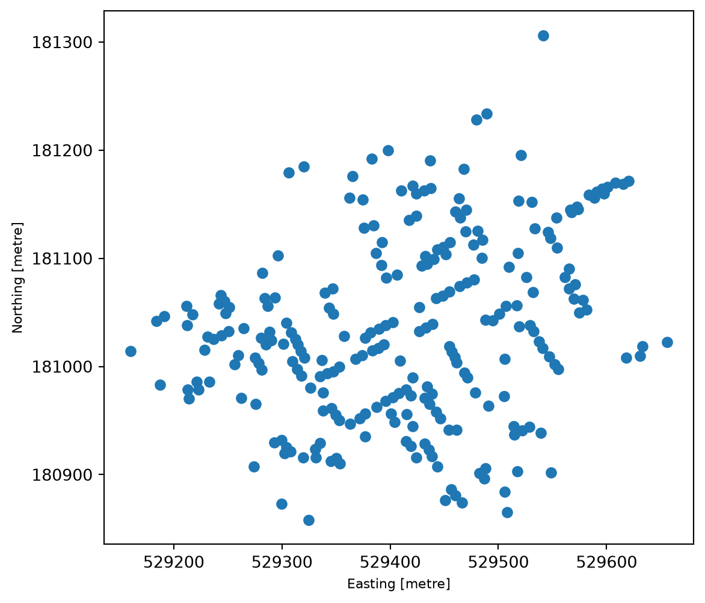
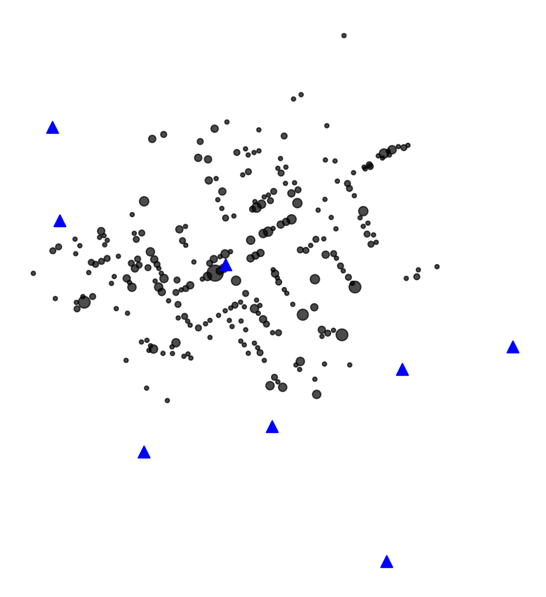
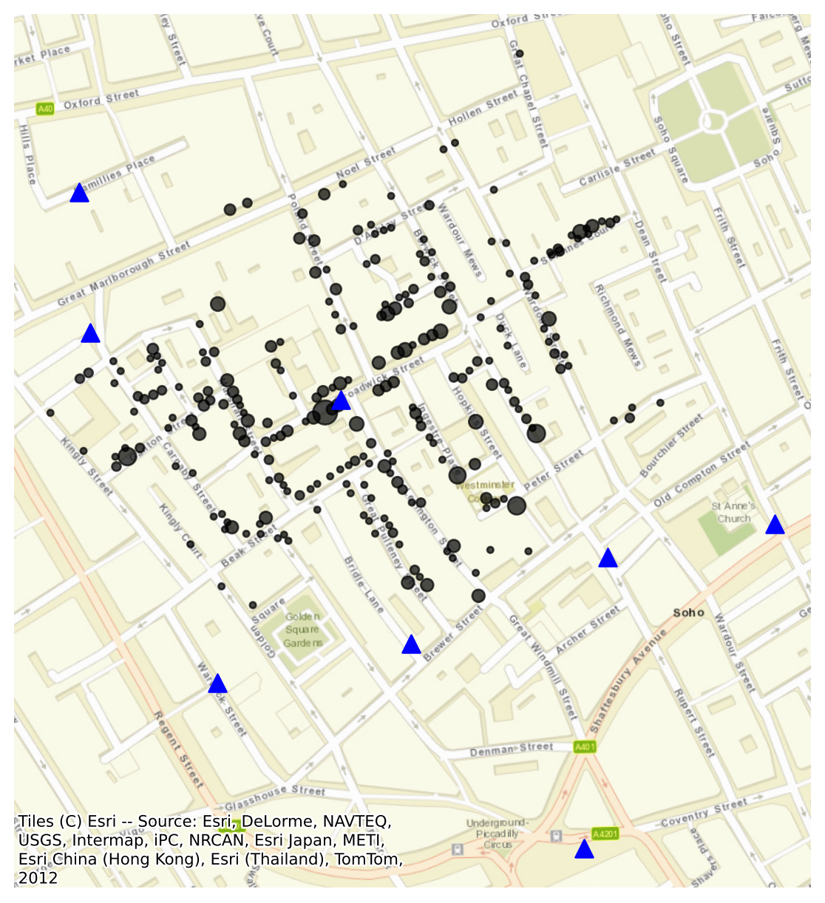
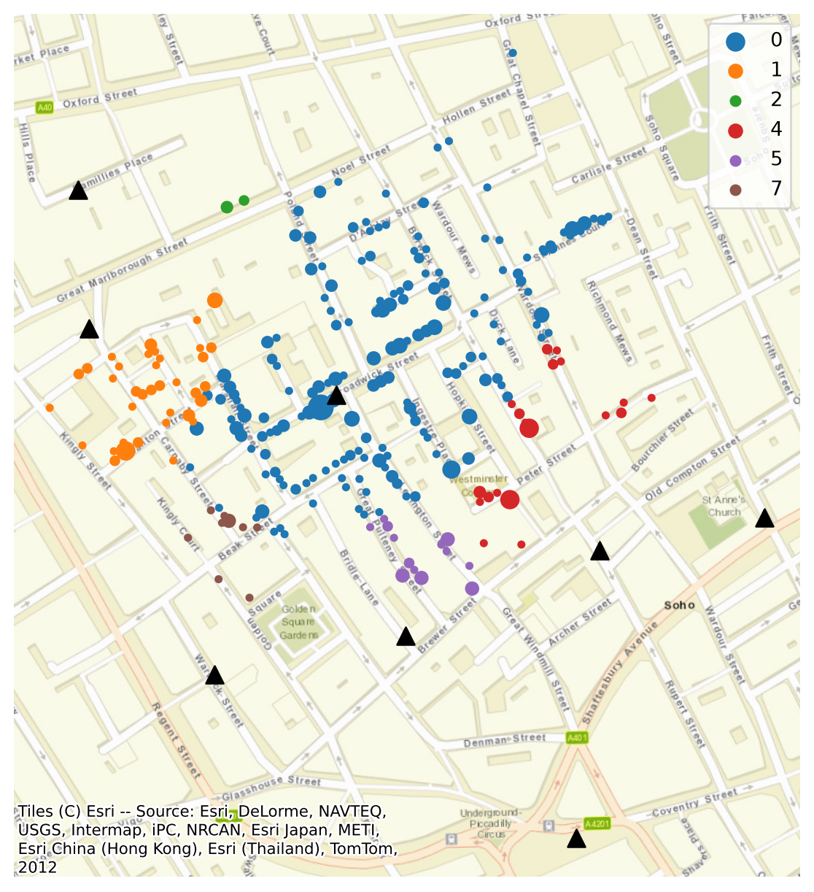
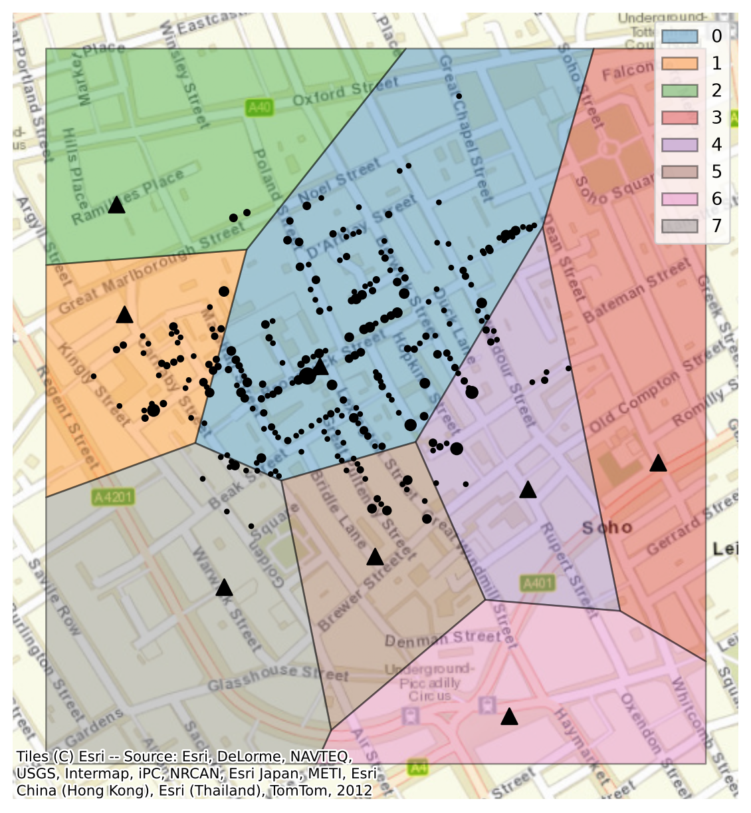

print("Hello!")Hello!Welcome to this course! These notes go with the slides. You can use them afterwards to revisit the detail, and you can also work through them on your own: each section ends with a “Try it yourself” activity, with instructions and an answer you can open.
Most health data has a location attached: where a patient lives, where a GP surgery or hospital is, where a case of a disease was reported. Geospatial data science uses those locations to answer questions that a table alone cannot, such as who lives far from a service, or whether cases cluster in one place. In this course you will learn its main ideas, and how to put them into practice in Python with the geopandas library, by recreating John Snow’s famous map of the 1854 cholera outbreak in Soho, London.
By the end of this course you will be able to:
Small snippets of code are shown in a grey box like this:
print("Hello!")When the code is run, its output is shown below it, marked with a vertical red line:
print("Hello!")Hello!Commands that install packages in Colab start with %:
Colab
%pip install contextilyIn each section there is a “Try it yourself” activity, which is also on the slides. Activities are shown in a box with a red top edge, and each one ends with a yellow box that contains the answer. Try each one yourself before looking at the answer.
An example activity
This is an exercise. Click the box below to see the answer.
Important points are highlighted in green boxes like this one:
London was growing fast, and many families lived crowded into old houses. Sewage went into cesspits under and behind the houses, and many people fetched their water from street pumps. Cholera had already swept through Britain in the 1830s and 1840s.

Wikimedia Commons, public domain.
Cholera is a gut infection caused by the bacterium Vibrio cholerae. It spreads mainly through water and food contaminated with the bacterium, and causes acute watery diarrhoea, sometimes with vomiting. Most infected people have only mild symptoms, but in severe cases the dehydration can kill within hours if it is not treated. Today, most cases can be treated with oral rehydration solution (Global Task Force on Cholera Control).
In 1854, nobody knew about the bacterium: it was not isolated until 1883. Cholera was a terrifying and mysterious disease.

National Library of Medicine, public domain.
Most doctors at the time believed in miasma theory: that diseases like cholera spread through “bad air”, from rotting matter and filth. The physician John Snow thought cholera spread through contaminated water.
The two theories predict different patterns on a map. If bad air were to blame, deaths would be spread across a neighbourhood. If water were to blame, they would cluster around its source. This is why a map could help tell them apart.
The outbreak started on 30 August 1854. On 1 September alone, 143 people fell ill and later died. Snow studied the death records and visited the households of people who had died, and found that most of them had lived near, and drunk from, the water pump on Broad Street (CDC, 2004). On the evening of 7 September he presented his evidence to the parish’s Board of Guardians, and the pump’s handle was removed the next day (UCLA Department of Epidemiology).
Snow then drew a map of the deaths, published in 1855 in the second edition of his book On the Mode of Communication of Cholera. Each death is a small black bar, stacked at the address where it happened, and the pumps are marked on the map.

Wellcome Collection.
Snow died in 1858, before his ideas were widely accepted. Within a decade, though, the link between dirty water and disease was a subject for cartoons.

Public domain.
We use Robin Wilson’s digitised version of Snow’s map. He traced the deaths and the pumps from Snow’s map, and lined them up with a modern map, so they can be used in modern software. His website lists teaching as one of its uses. The download has several files, and we use three of them:
| File | What it holds |
|---|---|
Cholera_Deaths.shp |
A point for each address where one or more people died. Its Count column is the number of deaths there. |
Pumps.shp |
A point for each water pump. There are no other columns: the pumps are not named. |
SnowMap.tif |
An image of Snow’s map, lined up with the modern streets (used in an optional extra). |
489 deaths and 8 water pumps. Which pump was to blame?
We use Google Colab, which runs Python in your web browser. You need a Google account. Nothing needs to be installed on your computer.
The first cell installs the packages we need, if Colab does not already have them:
Colab
%pip install --quiet "geopandas>=1.0" contextily folium mapclassify| Package | What it does |
|---|---|
| geopandas | Reads, analyses and plots tables of data with locations |
| contextily | Adds background maps to plots |
| folium | Makes interactive web maps, used by geopandas’s explore() |
| mapclassify | Colour scales for maps, also needed by explore() |
The second cell downloads the data and unzips it:
import urllib.request
import zipfile
url = "https://johnsnow.rtwilson.com/data/SnowGIS_SHP.zip"
urllib.request.urlretrieve(url, "SnowGIS_SHP.zip")
with zipfile.ZipFile("SnowGIS_SHP.zip") as zip_file:
zip_file.extractall()This makes a folder called SnowGIS_SHP. To see it, click the folder icon on the left of Colab.
How is location data stored, and what do the numbers mean?
Geospatial data has two parts: where something is, as coordinates, and what we know about it, such as the number of deaths at an address. The location is what makes it useful. It can link datasets that share nothing else, such as patients’ postcodes and air pollution levels, and it can show patterns that a table hides.
The geographer Waldo Tobler summed up why in 1970, in what is often called the “first law of geography”:
Everything is related to everything else, but near things are more related than distant things.
Neighbouring streets share the same air, water and services, so they tend to be alike. A cluster that stands out from its surroundings is therefore worth explaining. In 1854, a cluster of deaths around one pump pointed to the water.
There are two ways to store the world as data:

| Vector | Raster | |
|---|---|---|
| Stores | Shapes, each with a row of values | A grid of cells, each with a value |
| Best for | Things with edges: buildings, roads, addresses | Things that vary smoothly: air pollution, temperature |
| Common files | Shapefile, GeoPackage, GeoJSON | GeoTIFF |
| Python library | geopandas | rasterio, xarray |
A raster’s resolution, the size of its cells, sets the smallest detail it can show. This course uses vector data. The only raster is SnowMap.tif, a scan of Snow’s map, which we use as a background in an optional extra.
Vector data has three kinds of shape, or geometry:
This course uses points (the deaths and the pumps) and, in section 4, polygons.
By convention, geopandas is imported as gpd, in the same way as pandas is imported as pd. gpd.read_file() reads location data in many formats, including shapefiles, GeoPackages and GeoJSON:
import geopandas as gpd
import pandas as pd
deaths = gpd.read_file("SnowGIS_SHP/Cholera_Deaths.shp")
pumps = gpd.read_file("SnowGIS_SHP/Pumps.shp")Let’s look at the first few rows:
deaths.head()| Count | geometry | |
|---|---|---|
| 0 | 3 | POINT (529308.741 181031.352) |
| 1 | 2 | POINT (529312.164 181025.172) |
| 2 | 1 | POINT (529314.382 181020.294) |
| 3 | 1 | POINT (529317.38 181014.259) |
| 4 | 4 | POINT (529320.675 181007.872) |
This is a GeoDataFrame: a pandas DataFrame with a geometry column that holds a shape for each row.
type(deaths)geopandas.geodataframe.GeoDataFrameEach row is an address. Count is the number of people who died there, and geometry is its location, written as POINT (x y). geopandas stores these shapes using the shapely library.
Everything you know about pandas still works on a GeoDataFrame. For example, len() counts the rows, and .sum() adds up a column:
len(deaths), deaths["Count"].sum()(250, np.int64(489))There are 250 addresses and 489 deaths. value_counts() counts how often each value appears, and sort_index() puts them in order. Most addresses had one death, and one had 15:
deaths["Count"].value_counts().sort_index()Count
1 136
2 56
3 26
4 18
5 9
7 1
8 3
15 1
Name: count, dtype: int64The pumps table has only locations:
pumps| geometry | |
|---|---|
| 0 | POINT (529396.539 181025.063) |
| 1 | POINT (529192.538 181079.391) |
| 2 | POINT (529183.74 181193.735) |
| 3 | POINT (529748.911 180924.207) |
| 4 | POINT (529613.205 180896.804) |
| 5 | POINT (529453.586 180826.353) |
| 6 | POINT (529593.727 180660.455) |
| 7 | POINT (529296.104 180794.849) |
There are 8 pumps. The file does not include their names, so we give each one a number to refer to it by. range(len(pumps)) counts from 0 to 7:
pumps["pump_id"] = range(len(pumps))We will find out which pump is which in the activity at the end of this section.
.plot() draws the geometries, so you can check that the data looks sensible:
deaths.plot()
We will make better maps in the next section. For now, look at the numbers on the axes. They are in the hundreds of thousands, so they are not latitude and longitude. What are they?
A location is just a pair of numbers. To know where on Earth those numbers are, we need to know what they are measured from, and in what units. This is the coordinate reference system (CRS).

There are two kinds:
geopandas reads the CRS from the .prj file and stores it in .crs:
deaths.crs<Projected CRS: EPSG:27700>
Name: OSGB36 / British National Grid
Axis Info [cartesian]:
- E[east]: Easting (metre)
- N[north]: Northing (metre)
Area of Use:
- name: United Kingdom (UK) - offshore to boundary of UKCS within 49°45'N to 61°N and 9°W to 2°E; onshore Great Britain (England, Wales and Scotland). Isle of Man onshore.
- bounds: (-9.01, 49.75, 2.01, 61.01)
Coordinate Operation:
- name: British National Grid
- method: Transverse Mercator
Datum: Ordnance Survey of Great Britain 1936
- Ellipsoid: Airy 1830
- Prime Meridian: GreenwichThis data uses the British National Grid, a projected CRS designed for Great Britain. It measures positions in metres east and north of a point south-west of the Isles of Scilly, so the first address is about 529 km east and 181 km north of that point.
Common CRSs have a code from the EPSG registry. The two you will meet most often in the UK are:
| CRS | EPSG code | Units | Good for |
|---|---|---|---|
| British National Grid | 27700 | metres | Distances and areas in Great Britain |
| WGS 84 (latitude and longitude) | 4326 | degrees | GPS, sharing data, web maps |
This .prj file describes the CRS in words, without its EPSG code. It is good practice to state the CRS by its code, so that geopandas, and anyone reading your code, knows exactly which one it is:
deaths = deaths.set_crs(27700, allow_override=True)
pumps = pumps.set_crs(27700, allow_override=True)allow_override=True is needed because the data already has a CRS: it tells geopandas that we mean to replace it.
To get latitude and longitude, convert the data to WGS 84:
deaths_latlon = deaths.to_crs(4326)
deaths_latlon.head()| Count | geometry | |
|---|---|---|
| 0 | 3 | POINT (-0.13793 51.51342) |
| 1 | 2 | POINT (-0.13788 51.51336) |
| 2 | 1 | POINT (-0.13785 51.51332) |
| 3 | 1 | POINT (-0.13781 51.51326) |
| 4 | 4 | POINT (-0.13777 51.5132) |
The same addresses now have coordinates in degrees. Points are written as POINT (x y), so longitude comes first. Most people, and most web maps, write a location the other way round.
.geometry.x and .geometry.y give each coordinate on its own. Here, y is the latitude:
deaths_latlon.geometry.y.head()0 51.513418
1 51.513361
2 51.513317
3 51.513262
4 51.513204
dtype: float64The CRS matters most when you measure things. .distance() measures the distance from each point to a shape. pumps.geometry.iloc[0] picks out the location of the first pump, and we measure the distance from each address to it:
first_pump = pumps.geometry.iloc[0]
deaths.distance(first_pump).head()0 88.022893
1 84.375895
2 82.295284
3 79.893670
4 77.787424
dtype: float64In the British National Grid, the answer is in metres. In latitude and longitude, it is in degrees:
first_pump_latlon = pumps.to_crs(4326).geometry.iloc[0]
deaths_latlon.distance(first_pump_latlon).head()/var/folders/jc/jt62m3bs4237svpzyrrtv_900000gp/T/ipykernel_14274/717156214.py:2: UserWarning: Geometry is in a geographic CRS. Results from 'distance' are likely incorrect. Use 'GeoSeries.to_crs()' to re-project geometries to a projected CRS before this operation.
deaths_latlon.distance(first_pump_latlon).head()0 0.001265
1 0.001215
2 0.001185
3 0.001147
4 0.001107
dtype: float64A degree is not a fixed distance: a degree of longitude is about 111 km at the equator, about 69 km in London, and shrinks to nothing at the poles. geopandas warns you about this. To measure distances or areas, use a projected CRS in metres, such as the British National Grid in Great Britain.
pumps to latitude and longitude.latitude, longitude. Which street is it on?How do we turn a table of points into a map that people can read?
A good map has four things: the data you want people to look at, drawn so it stands out; enough context, such as a background map, for readers to know where they are; a key or caption that says what the symbols mean; and a credit for where the data and background map came from.
Maps show values through what cartographers call visual variables:
| Good for | In geopandas | On Snow’s map | |
|---|---|---|---|
| Size | Amounts, such as a count | markersize= |
The height of each stack of bars |
| Colour | Amounts, or categories | column=, cmap= |
Not used |
| Shape | Different kinds of thing | marker= |
Bars for deaths, dots for pumps |
We will build a map in layers, like sheets of tracing paper: the deaths, then the pumps on top, then a street map underneath.
.plot() uses the matplotlib library, and returns a matplotlib Axes: the area of the figure that the map is drawn in. If we save it as ax and pass it to the next .plot() with ax=ax, the next layer is drawn on the same map.
Each point is an address, and some addresses had many deaths. Like Snow’s stacked bars, we can show this by the size of each dot. markersize takes either a single number or a column, so we multiply the Count column by 10 to make the dots big enough to see:
ax = deaths.plot(
color="black", markersize=deaths["Count"] * 10, alpha=0.7, figsize=(8, 8)
)
pumps.plot(ax=ax, color="blue", marker="^", markersize=80)
ax.set_axis_off()
The other settings are:
alpha=0.7 makes the dots slightly see-through, so overlapping dots stay visible.figsize=(8, 8) sets the size of the figure, in inches.marker="^" draws the pumps as triangles, so they stand out from the deaths.ax.set_axis_off() hides the axis values, which readers of a map do not need.The cluster around one pump is already clear.
Without streets, it is hard to tell where these points are. The contextily package adds a background map, made from the same small square images (“tiles”) as web maps:
import contextily as cx
ax = deaths.plot(
color="black", markersize=deaths["Count"] * 10, alpha=0.7, figsize=(8, 8)
)
pumps.plot(ax=ax, color="blue", marker="^", markersize=80)
cx.add_basemap(ax, crs=deaths.crs, source=cx.providers.Esri.WorldStreetMap)
ax.set_axis_off()
crs=deaths.crs tells contextily the CRS of our data. Map tiles use their own CRS, so contextily converts them to match.source chooses the map. We use Esri’s street map.Keep the attribution in the corner: the people who made the map require it. cx.providers lists many other maps, but some now need a key, or block requests from code.
To save a map as an image, for a report or slides, use ax.figure.savefig("map.png", dpi=300). dpi sets the resolution: 300 is good for print.
.explore() makes an interactive map that you can zoom, pan and hover over. It converts the data to the CRS that web maps use for you:
deaths.explore(
column="Count",
cmap="Reds",
marker_kwds={"radius": 4},
tiles="Esri.WorldStreetMap",
)column="Count" colours each point by its number of deaths, and cmap chooses the colours.marker_kwds={"radius": 4} sets the size of the dots, in pixels.tiles chooses the background map, by name.Hover over a point to see its row of the table.
Make the interactive map of the deaths, as above, and save it as m.
Add the pumps as a second layer, with pumps.explore(m=m, color="blue"). Passing m=m draws on the same map, like ax=ax does for .plot().
Give each layer a name, with name="Deaths" and name="Pumps", then add a layer control so you can turn them on and off:
import folium
folium.LayerControl().add_to(m)
mHover over the points to find the address with the most deaths. Is it near a pump?
Which pump was closest to each death?
Snow’s argument was that the deaths clustered around the Broad Street pump. We can test this by finding the nearest pump to each address, and adding up the deaths for each pump.
Shapes can relate to each other in a few ways. Two shapes can intersect (touch or overlap), one can contain the other, or they can be some distance apart. These relationships, called spatial predicates, are what let us join tables by location.

In pandas, you join two tables using a column they share, such as a patient ID. A spatial join joins them by location instead:
| Join | Function | Matches rows that |
|---|---|---|
| By a column | pd.merge() |
Have the same value in a shared column |
| By location | sjoin() |
Have shapes that intersect, or where one contains the other |
| To the nearest | sjoin_nearest() |
Are closest to each other |
A spatial join links datasets that share nothing but their location. For example, it can give each patient’s postcode the area it is in, so it can be matched to deprivation data for that area.
sjoin_nearest() gives each address the columns of its nearest pump:
nearest = deaths.sjoin_nearest(pumps, distance_col="distance")
nearest.head()| Count | geometry | index_right | pump_id | distance | |
|---|---|---|---|---|---|
| 0 | 3 | POINT (529308.741 181031.352) | 0 | 0 | 88.022893 |
| 1 | 2 | POINT (529312.164 181025.172) | 0 | 0 | 84.375895 |
| 2 | 1 | POINT (529314.382 181020.294) | 0 | 0 | 82.295284 |
| 3 | 1 | POINT (529317.38 181014.259) | 0 | 0 | 79.893670 |
| 4 | 4 | POINT (529320.675 181007.872) | 0 | 0 | 77.787424 |
The table still has one row for each of the 250 addresses, with three new columns:
index_right is the pump’s row in pumps. geopandas adds it to every spatial join.pump_id is the pump’s number, from the pumps table.distance is the distance to the pump. We asked for it with distance_col. The data is in the British National Grid, so it is in metres.sjoin_nearest() measures in a straight line, “as the crow flies”. People walk along streets, so the nearest pump is not always the quickest to reach. We come back to this in section 5.
Now we can add up the deaths for each pump. groupby("pump_id") puts the rows into groups, one for each pump, and ["Count"].sum() adds up the deaths in each group:
deaths_per_pump = nearest.groupby("pump_id")["Count"].sum()
deaths_per_pump.sort_values(ascending=False)pump_id
0 340
1 65
4 40
5 27
7 12
2 5
Name: Count, dtype: int32As a percentage of all deaths:
percent = 100 * deaths_per_pump / deaths["Count"].sum()
percent.round(1).sort_values(ascending=False)pump_id
0 69.5
1 13.3
4 8.2
5 5.5
7 2.5
2 1.0
Name: Count, dtype: float64Of the 489 deaths, 340 (70%) were at addresses where the nearest pump was the Broad Street pump. The next highest pump had 65. Pumps 3 and 6 are missing from the table: no address had them as its nearest pump.
describe() summarises the distances:
nearest["distance"].describe()count 250.000000
mean 105.400090
std 52.618246
min 5.256476
25% 70.452494
50% 96.575483
75% 130.618245
max 316.405923
Name: distance, dtype: float64On average, an address was about 105 metres from its nearest pump, and the furthest was about 316 metres away.
Colouring each address by its nearest pump shows the area each pump was closest to. categorical=True treats the pump numbers as labels, not as numbers on a scale, and cmap="tab10" gives each one a different colour:
ax = nearest.plot(
column="pump_id",
categorical=True,
legend=True,
cmap="tab10",
markersize=nearest["Count"] * 10,
figsize=(8, 8),
)
pumps.plot(ax=ax, color="black", marker="^", markersize=80)
cx.add_basemap(ax, crs=deaths.crs, source=cx.providers.Esri.WorldStreetMap)
ax.set_axis_off()
broad_street, with pumps.geometry.iloc[0].deaths.distance(broad_street) to find the addresses within 100 metres of it.Extra: broad_street.buffer(100) makes a circle with a radius of 100 metres around the pump. Draw it on a map with the deaths.
Which area did each pump serve?
In the last section we matched each address to its nearest pump. We can also draw the whole area that is closer to each pump than to any other. These areas are called Voronoi polygons. Their edges are the lines where you are exactly the same distance from two pumps.

They are named after the mathematician Georgy Voronoy, who studied them in 1908. They are also called Thiessen polygons, after Alfred Thiessen, who used them in 1911 to estimate rainfall from scattered rain gauges. Today they are used to draw catchments, such as the area nearest each GP surgery or hospital.
Snow drew one too. For the parish’s inquiry into the outbreak, he redrew his map with a dotted line around the area that was closer to the Broad Street pump than to any other. He measured the distance along the streets, not in a straight line, and his map may be the earliest use of this kind of diagram (UCLA Department of Epidemiology).
The outer polygons would stretch out forever, so first we make a box around the data to give them an edge. total_bounds gives the smallest and largest x and y values of all the points. We add 50 metres on each side, and shapely’s box() turns the four values into a rectangle:
from shapely.geometry import box
all_points = pd.concat([deaths.geometry, pumps.geometry])
xmin, ymin, xmax, ymax = all_points.total_bounds
study_area = box(xmin - 50, ymin - 50, xmax + 50, ymax + 50)pd.concat() stacks the deaths and the pumps into one column, so that the box covers both.
voronoi_polygons() draws a polygon around each pump, out to the edge of the box:
cells = pumps.voronoi_polygons(extend_to=study_area)
cells0 POLYGON ((528618.568 181758.906, 529800.122 18...
1 POLYGON ((529355.796 180905.823, 529265.984 18...
2 POLYGON ((528618.568 180095.283, 528618.568 18...
3 POLYGON ((528618.568 181092.738, 529319.694 18...
4 POLYGON ((530314.082 180095.283, 529159.364 18...
5 POLYGON ((530314.082 181758.906, 530314.082 18...
6 POLYGON ((529496.091 180946.099, 529628.652 18...
7 POLYGON ((529496.091 180946.099, 529568.744 18...
dtype: geometryThere are 8 polygons, one for each pump. But they are not in the same order as the pumps, so we cannot copy the pump_id column across.
Each polygon contains exactly one pump, so a spatial join can find it. sjoin() joins rows whose shapes meet, and predicate sets the rule. predicate="contains" keeps the pairs where the polygon contains the pump. .clip() then trims the polygons to the box:
catchments = gpd.GeoDataFrame(geometry=cells)
catchments = catchments.sjoin(pumps, predicate="contains").clip(study_area)
catchments| geometry | index_right | pump_id | |
|---|---|---|---|
| 4 | POLYGON ((529407.857 180645.583, 529568.744 18... | 6 | 6 |
| 2 | POLYGON ((529265.984 180945.005, 529355.796 18... | 7 | 7 |
| 7 | POLYGON ((529568.744 180781.491, 529407.857 18... | 5 | 5 |
| 3 | POLYGON ((529319.694 181146.686, 529265.984 18... | 1 | 1 |
| 6 | POLYGON ((529628.652 181170.032, 529709.452 18... | 4 | 4 |
| 5 | POLYGON ((529709.452 180769.895, 529628.652 18... | 3 | 3 |
| 1 | POLYGON ((529265.984 180945.005, 529319.694 18... | 0 | 0 |
| 0 | POLYGON ((529319.694 181146.686, 529110.337 18... | 2 | 2 |
ax = catchments.plot(
column="pump_id",
categorical=True,
legend=True,
cmap="tab10",
alpha=0.4,
edgecolor="black",
figsize=(8, 8),
)
pumps.plot(ax=ax, color="black", marker="^", markersize=80)
deaths.plot(ax=ax, color="black", markersize=deaths["Count"] * 5)
cx.add_basemap(ax, crs=deaths.crs, source=cx.providers.Esri.WorldStreetMap)
ax.set_axis_off()
To count the deaths in each catchment, we join the deaths to the polygons they fall in. By default, sjoin() uses predicate="intersects", which keeps the pairs that touch or overlap. We only need the pump_id and geometry columns of the catchments:
deaths_in_catchment = deaths.sjoin(catchments[["pump_id", "geometry"]])
deaths_in_catchment.groupby("pump_id")["Count"].sum()pump_id
0 340
1 65
2 5
4 40
5 27
7 12
Name: Count, dtype: int32These are the same totals as in section 3. Each polygon is the area nearest its pump, so the two methods must agree. What the polygons add is the areas themselves, including the places where no one died.
A map of areas, each shaded by a value, is called a choropleth. Choropleths are the most common kind of map in public health, and they are easy to misread:
We do not know how many people lived near each pump, so we can only map counts here.
Make a map of the catchments, shaded by their number of deaths.
Add a deaths column to catchments. .map() looks up each pump_id in the totals, and .fillna(0) gives 0 to the pumps with no deaths:
totals = deaths_in_catchment.groupby("pump_id")["Count"].sum()
catchments["deaths"] = catchments["pump_id"].map(totals).fillna(0)Plot catchments with column="deaths", cmap="Reds" and legend=True. Add the pumps and a background map.
Which catchments had no deaths?
Should we believe it?
Our analysis points strongly at the Broad Street pump. But a map is a summary, and every summary leaves things out. This section has no new code.
People choose a pump for many reasons, such as habit, the taste of the water, or whether it is on their way to work. Distance along the streets is also different from distance in a straight line. For some addresses, the Rupert Street pump was closer in a straight line, but dead ends made the Broad Street pump quicker to reach.
The exceptions were some of Snow’s strongest evidence (University of East Anglia):
Later, Henry Whitehead, a local curate who had at first doubted Snow, traced the first case to a baby at 40 Broad Street. Her mother emptied the washing water into a cesspit next to the pump, and the cesspit leaked into the pump’s well (Science History Institute).
None of these shows up as a cluster on a map. They came from talking to people.
Health data is usually released for areas, such as postcode areas or LSOAs, not for addresses, to protect people’s privacy. But the areas you count in can change what you see. This is called the modifiable areal unit problem (MAUP), and it has two parts:

In the diagram, the points cluster in the middle. Counted in four squares, the boundaries cut the cluster into pieces, and one corner looks worst. Counted in nine, the cluster falls in the middle square. Our pump catchments are one choice of areas: different boundaries would give a different map.
The methods in this course are used in public health today, and the same questions apply:
Pick one question, and write your answer in the chat:
In this course you have used geopandas to recreate John Snow’s analysis:
| Task | Code |
|---|---|
| Read a file | gpd.read_file("file.shp") |
| Check the CRS | gdf.crs |
| Label the CRS | gdf.set_crs(27700, allow_override=True) |
| Convert the CRS | gdf.to_crs(4326) |
| Static map | gdf.plot(ax=ax) |
| Background map | cx.add_basemap(ax, crs=gdf.crs, source=...) |
| Interactive map | gdf.explore(m=m) |
| Distance | gdf.distance(shape) |
| Nearest join | gdf.sjoin_nearest(other, distance_col="distance") |
| Join by location | gdf.sjoin(other, predicate="intersects") |
| Area around a shape | shape.buffer(100) |
| Voronoi polygons | gdf.voronoi_polygons(extend_to=area) |
Developed by the Jean Golding Institute. Data digitised from John Snow’s map by Robin Wilson. Pictures: John Snow’s map, public domain (colour scan: Wellcome Collection); a London slum, 1860s, Wikimedia Commons, public domain; Cholera “Tramples the victors & the vanquished both”, Robert Seymour, 1831, National Library of Medicine, public domain; Death’s Dispensary, George J. Pinwell, Fun, 1866, public domain.